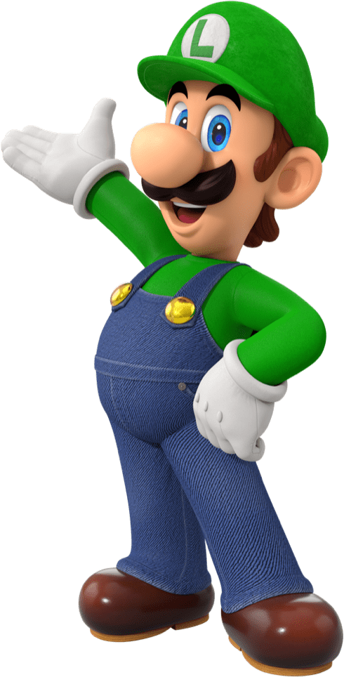

O personagem mais famoso dos video games finalmente recebe seu filme (não, aquele de 1993 não conta!). Seu primeiro jogo chegou ao mundo em 14 de julho de 1983. Mas seu colágeno está em dia.
Há um rumor de que o nome de Luigi foi criado a partir de uma pizzaria que ficava perto da Nintendo americana em Washington. Miyamoto observou que a palavra 'ruiji' significava 'similar' em japonês, e foi adotado Luigi como nome por causa da semelhança já que nessa época o personagem era apenas diferenciado pela cor.
√â a chefe do Reino dos Cogumelos. Durante a sua elabora√ß√£o, foi orientado que seus olhos fossem similares aos de um gato. Peach tem uma paixão pela cor rosa (ningu√©m notou 🤨), interesse que dá √™nfase a sua personalidade gentil e doce.

O nome serve tanto para um indiv√≠duo quanto um nome de toda uma ra√ßa que habita o Reino do Cogumelo.😵 🤯 Confuso, eu sei. √â um dos atendentes mais leais da Princesa Peach trabalhando constantemente em seu nome.
O nome Toad pode derivar tanto de toadstool (literalmente "cogumelo") como toady ("servo leal") üçÑ.


Leeeembra de um jogo 8 bits, ainda de fliperama dos anos 80 que um gorila ficava jogando barris e o Mario tinha que subir rampas at√© chegar √† princesa? Não √© este mesmo cara, era o pai dele. √â um clássico dos jogos da fam√≠lia Nintendo. No filme... (não vamos estragar a surpresa) 😏

Ele é o rei de todos os Koopas (uma espécie similar a tartarugas super desenvolvidas) e também o líder da organização criminosa conhecida como Koopa Troop, composta por diversas criaturas do Reino dos Koopas. Bowser, com sua ganância de poder, tem como aspiração de vida dominar o Reino dos Cogumelos para expandir seu reino.